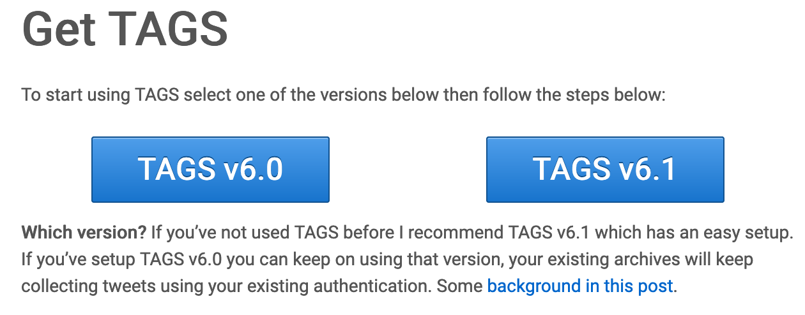
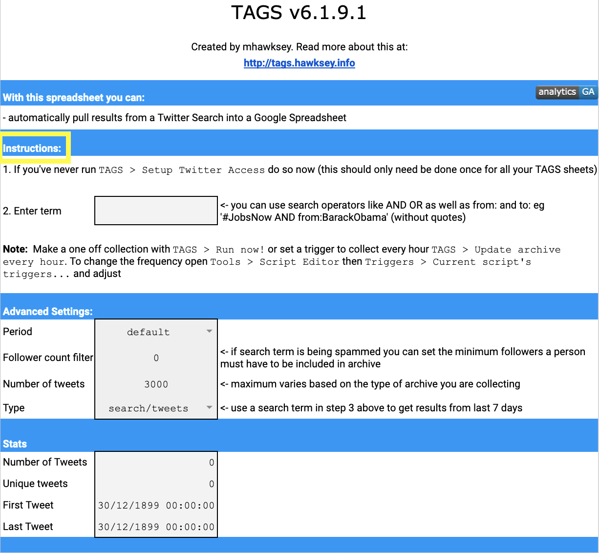
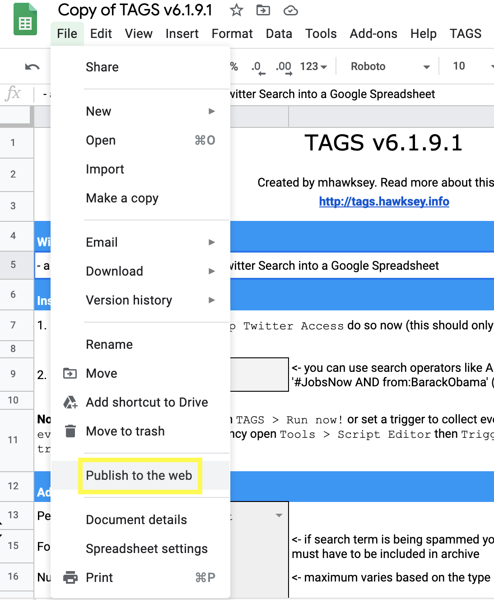
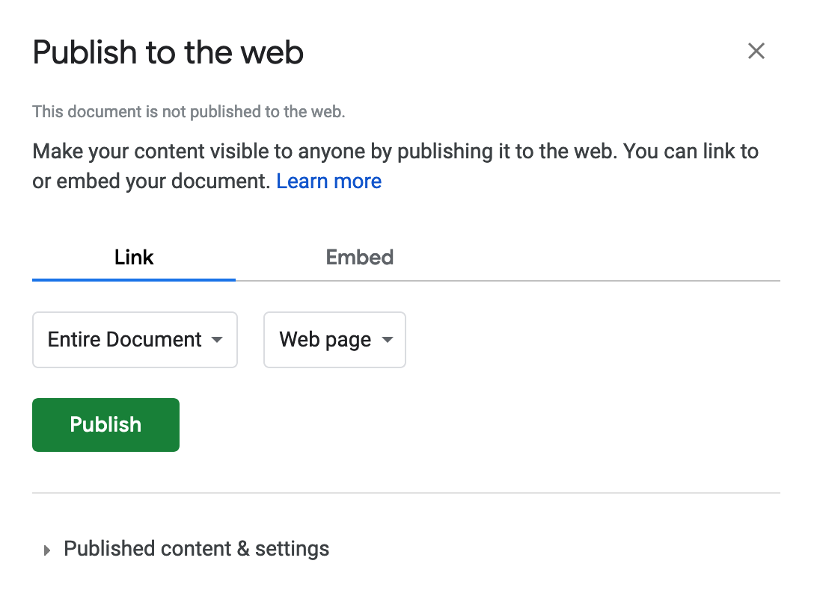
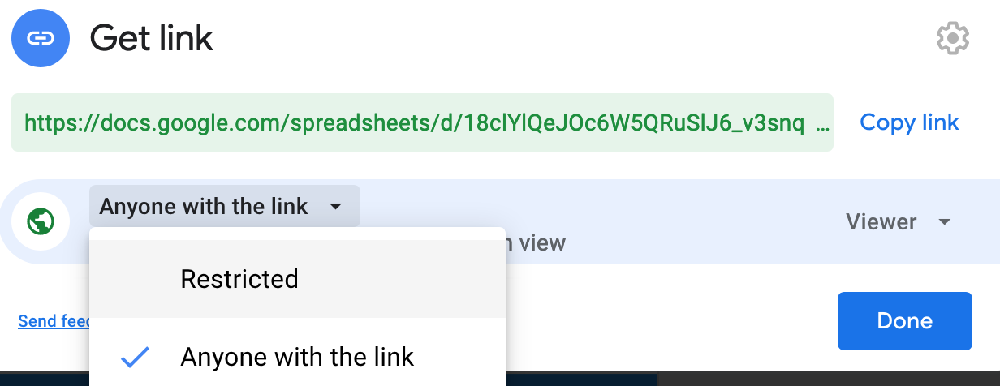
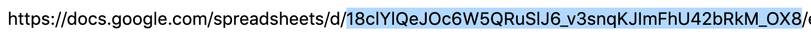

This vignette introduces the initial setup necessary to use {tidytags}. Specifically, this guide offers help for four key tasks.
- Making sure your TAGS tracker can be accessed
- Getting and storing a Google API key
- Getting and storing Twitter API tokens
- Getting and storing a OpenCage Geocoding API key (optional; required only for geocoding)
Key Task #1. Making sure your TAGS tracker can be accessed
A core functionality of {tidytags} is to retrieve tweets data from a Twitter Archiving Google Sheet; TAGS). A TAGS tracker continuously collects tweets from Twitter, based on predefined search criteria and collection frequency.
Here we offer a brief overview on how to set up TAGS, but be sure to read through the information on the TAGS landing page for thorough instructions on getting started with TAGS.
We recommend using TAGS v6.1.

You will be prompted to Make a copy of TAGS that will then reside in your own Google Drive space. Click the button to do this.

Your TAGS tracker is now ready to use! Just follow the two-steps of instructions on the TAGS tracker:

{tidytags} is set up to access a TAGS tracker by using the {googlesheets4} package. One requirement for using {googlesheets4} is that your TAGS tracker has been “published to the web.” To do this, with the TAGS page open in a web browser, go to File >> Publish to the web.

The Link field should be ‘Entire document’ and the Embed field should be ‘Web page.’ If everything looks right, then click the Publish button.

Next, click the Share button in the top right corner of the Google Sheets window, select Get shareable link, and set the permissions to ‘Anyone with the link can view.’


The input needed for the tidytags::read_tags() function is either the entire URL from the top of the web browser when opened to a TAGS tracker, or a Google Sheet identifier (i.e., the alphanumeric string following “https://docs.google.com/spreadsheets/d/” in the TAGS tracker’s URL).


Be sure to put quotations marks around the URL or sheet identifier when entering it into read_tags() function.
To verify that this step worked for you, run the following code:
read_tags("18clYlQeJOc6W5QRuSlJ6_v3snqKJImFhU42bRkM_OX8")
What should return is the following:

Then, try to run read_tags() with your own URL or sheet identifier. If that does not work, carefully review the steps above.
Key Task #2. Getting and storing a Google API key
To use read_tags(), you will need a Google API key for Google Sheets. Follow the {gargle} package vignette “How to get your own API credentials” (vignette("get-api-credentials", package = "gargle")) for a thorough guide through this process. The general steps are as follows:
- Enable the Google Sheets API in the Google Developers Console. To do so, from this link, click the
CREATE CREDENTIALSbutton (see the image below).

- On the next screen, select Google Sheets API and check the “Application data” radio button to the first prompt, and “No, I’m not using them” button for the second, as in the following:

- Next, you’ll next see a screen like the one below. There, name the key with a clearly identifiable title, such as “API key for tidytags.” Leave the “Application restrictions” setting as None, but under “API restrictions” select Restrict key and then check the box next to Google Sheets API. This is the only API needed for {tidytags} and will ensure that your new Google API key can only be used to access Google Sheets.

- Finally, bring the Google API key into R. Specifically, add the key to the
.Renvironfile. Edit this file directly using theusethis::edit_r_environ(scope='user')function. The format of the.Renvironfile should be as follows (inputting your unique Google API key after the=sign, with no quotation marks):
GOOGLE_API_KEY = YourGoogleAPIKey
Restart R (by closing and re-opening R/RStudio) for this key to be available in your next R Session.
You can read more about the Google Sheets API here, and get help with the API here.
Run the following line of code:
Sys.getenv("GOOGLE_API_KEY")
Your API key should be printed to the console. If it is not, carefully review the above steps, being sure to *close and re-open R/RStudio).
Key Task #3. Getting and storing Twitter API token
With a TAGS tracker archive imported into R, {tidytags} allows you to gather quite a bit more information related to the TAGS-collected tweets with the pull_tweet_data() function. This function builds off the {rtweet} package (via rtweet::lookup_tweets()) to query the Twitter API. However, to access the Twitter API, whether through {rtweet} or {tidytags}, you will need to apply for developers’ access from Twitter. You do this through Twitter’s developer website.
Getting access token
Fortunately, the {rtweet} documentation already contains a very thorough vignette, “Obtaining and using access tokens” (vignette("auth", package = "rtweet")), to guide you through the process of obtaining a Twitter API token. We recommend the second suggested method listed in the {rtweet} vignette, 2. Access token/secret method.
Following these directions, you will run the rtweet::create_token() function to save your Twitter token. saves your Twitter API key and token to the .Renviron file directly using the usethis::edit_r_environ(scope='user') function. The format of the .Renviron file should be as follows (inputting your unique credentials after the = sign, with no quotation marks):
TWITTER_APP = NameOfYourTwitterApp
TWITTER_API_KEY = YourConsumerKey
TWITTER_API_SECRET = YourConsumerSecretKey
TWITTER_ACCESS_TOKEN = YourAccessToken
TWITTER_ACCESS_TOKEN_SECRET = YourAccessTokenSecretNote that there are two separate secrets: TWITTER_API_SECRET (used to authenticate at the application level, which is most relevant when using {tidytags}) and TWITTER_ACCESS_TOKEN_SECRET(used to authenticate at the end-user level, which can allow access to one’s own private user data).
Once you’ve added these Twitter API pieces to .Renviron, run rtweet::create_token() with the following parameters:
token <- rtweet::create_token(
app = Sys.getenv('TWITTER_APP'),
consumer_key = Sys.getenv('TWITTER_API_KEY'),
consumer_secret = Sys.getenv('TWITTER_API_SECRET'),
access_token = Sys.getenv('TWITTER_ACCESS_TOKEN'),
access_secret = Sys.getenv('TWITTER_ACCESS_TOKEN_SECRET'))This compiles together all the pieces from your Twitter API credentials into one token (an .rds file) that is stored securely on your local machine. {tidytags} functions will now retrieve this token in the background, as needed. You only ever have to set this up once (until you start working on a different computer or need to change your Twitter API token).
To make sure the Twitter API token works, restart your R session and run the code rtweet::get_token().
Key Task #4. Getting and storing a OpenCage Geocoding API key
The {tidytags} function geocode_tags() pulls from the OpenCage Geocoding API, which requires a OpenCage Geocoding API key. Note that this key task is only required for geocoding and not other functionality provided by {tidytags}. The OpenCage API allows 2,500 searches per day as part of a free trial. If you greatly exceed this limit, they will ask you to upgrade to a paid plan.
Getting the access key
Getting an OpenCage Geocoding API key is more straightforward and immediate than the Twitter API token process. You can secure an API access key through OpenCage directly; their Quick Start guide offers helpful guidance (read more here). Once you have the key, the OpenCage Geocoding API Documentation offers many more additional helps.
We recommend saving your OpenCage Geocoding API key in the .Renviron file as OPENCAGE_KEY (similar to what you did with the Twitter tokens). You can quickly access this file using the R code:
if (requireNamespace("usethis", quietly = TRUE) {
usethis::edit_r_environ(scope='user')
}Then, add a line to this file that reads (inputting your unique OpenCage Key after the = sign, with no quotation marks):
OPENCAGE_KEY = PasteYourOpenCageKeyHere
Once you’ve saved the .Renviron file, quit your R session and restart. The function geocode_tags() will work for you from now on. Note that the {tidytags} geocode_tags() function retrieves your saved API key automatically and securely, and you won’t need to think about this after the initial setup.
To make sure the OpenCage Geocoding API key works, restart your R session and run the following code:
Sys.getenv('OPENCAGE_KEY')You’re now ready to proceed to using {tidytags}! Now would be a good time to learn about the full functionality of the package by walking through the “Using tidytags with a conference hashtag” guide (vignette("tidytags-with-conf-hashtags", package = "tidytags")).
Getting help
{tidytags} is still a work in progress, so we fully expect that there are still some bugs to work out and functions to document better. If you find an issue, have a question, or think of something that you really wish {tidytags} would do for you, don’t hesitate to email Bret or reach out on Twitter: @bretsw and @jrosenberg6432.
You can also submit an issue on Github.
You may also wish to try some general troubleshooting strategies:
- Try to find out what the specific problem is
- Identify what is not causing the problem
- “Unplug and plug it back in” - restart R, close and reopen R
- Reach out to others! Sharing what is causing an issue can often help to clarify the problem.
- RStudio Community - https://community.rstudio.com/ (highly recommended!)
- Twitter hashtag: #rstats
- General strategies on learning more: https://datascienceineducation.com/c17.html